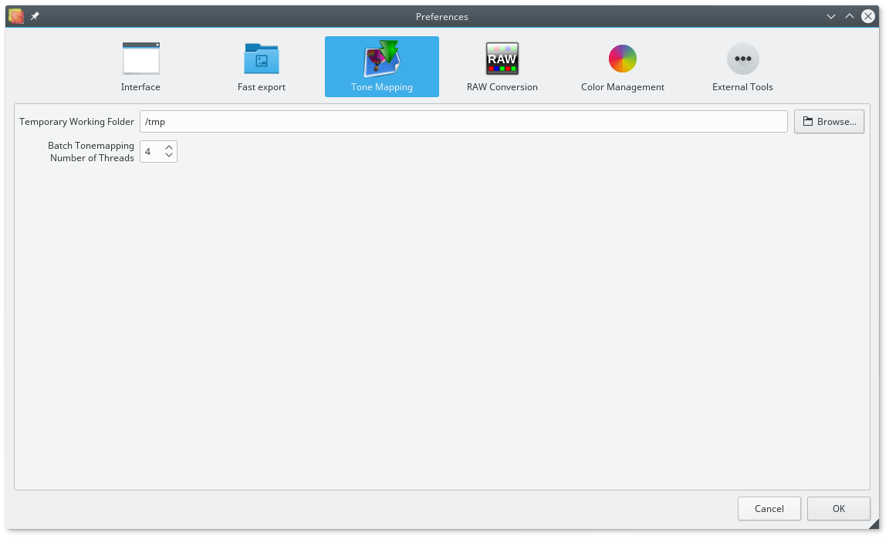

Temporary Working Folder. Luminance HDR needs a directory to save temporary files to. By default home directory is used, but you can specify some other directory.
You can also specify two options for Batch Tone Mapping feature:
Batch Tonemapping Default Output Format. This is the file format to which tonemapped LDR images will be saved to. TIFF, JPEG, PNG, PPM, PBM and BMP are your options.
Batch Tonemapping Number of threads. How many threads you want to use. Each thread gets allocated to a different CPU or a core of a multicore CPU.
